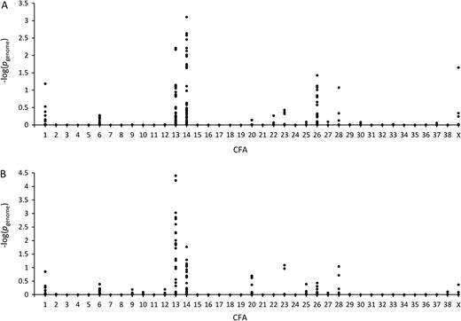

Researchers at the Wyss Institute and Harvard Medical School set out to treat MVD in Cavalier King Charles Spaniels. To research this problem, they conducted a combination gene therapy study on mice. They focused on three genes associated with longevity: FGF21, sTGF𝝱R2, and 𝛂Klotho. They used an adeno-associated virus (AAV) as a vehicle to transport these genes. This gene therapy effectively treated and sometimes even reversed obesity, type II diabetes, heart failure, and renal failure in mice. As of 2020, this gene therapy has been commercialized by Rejuvenate Bio, and they are currently in the process of testing the treatment for safety and efficacy in dogs. This gene therapy is a perfect example of how setting out to study MVD in Cavaliers specifically can be translated to other diseases and even across species.
Genome Wide Association studies in dogs have been very successful in the past, as well as very useful in learning more about the human analogues of these diseases. GWA studies in dogs have identified loci and genes associated with obsessive–compulsive disorder, arrhythmogenic right ventricular cardiomyopathy, dilated cardiomyopathy, systemic lupus erythematosus, and various cancers. GWA studies are usually easier to conduct on dogs due to the lower heterogeneity of disease than in humans. In humans, different variations at the same locus or variations at different loci can result in the same phenotype expressions of disease. In dogs and especially within the same dog breed, the same variations at the same loci are much more likely to cause the same disease. By pinpointing the genetic causes of a disease in dogs, researchers can learn more about the development and progression of the disease, as well as the phenotype expressions caused by these genetic factors.
A 2011 analysis of CKCS’s genome revealed MVD may not be caused by a single major gene, which indicates CRISPR may not be a viable solution (French, et al.). This GWA studied 36 dogs and divided them into early and late onset groups. This study found no areas of significance, which contradicts with another study in the same year. A separate 2011 GWA study found regions of significance in CFA13 and CFA14 to Myxomatous mitral valve disease (MMVD) in Cavaliers, also known as Mitral Valve Disease (Madsen, et al.). This study divided 241 Cavaliers into case and control groups.

The figure above displays the GWA of SNP markers to MMVD. Graph A shows results across the entire population studied, and graph B shows results from a subpopulation of dogs from Denmark and Sweden. The associations of SNP markers in chromosomes 13 and 14 with MMVD are visible in the graphs from both sets of the population. When analyzing the subpopulation from Denmark and Sweden, 20 SNP markers of significance were found in a 1.68 Mb region of CFA 13q2.2.3 and 9 markers were found in a 0.5 Mb region of CFA 14q1.3. Analysis of disease-associafted haplotypes concluded the D_14 haplotype may be pathogenic, while the d_13 haplotype may be protective. 20 protein-coding genes have been annotated in the identified region on CFA 13 and 11 protein-coding genes in the region of CFA 14. Some of these genes play a role in connective tissue, collagen formation, and proteoglycan and hyaluronan deposition.
Side note:
A 2015 GWA study on Whippets, a dog breed that is also very prone to MVD, found areas of significance in CFA15 and areas of suggestive association with MVD in CFA2 (Stern, et al.). While Cavaliers seem like a very promising candidate for GWA studies on MVD, they are not the only option. Analyzing the genome of other dog breeds provides an interesting avenue of research.
"The Cavalier King Charles Spaniel breed represents a robust resource for uncovering the genetic basis of MMVD."
-O’Brien et al., 2021
Cavaliers seem like the perfect candidate for a GWA study on MVD because of the extremely high prevalence of the disease in this breed. Unfortunately, the research seems to be lacking in this area. The loci identified have not been validated, and there have been no follow-up studies. Hopefully, more research will be done in this area to help identify genetic causes and potential treatments for Cavalier King Charles Spaniels, all dogs, and potentially even humans.
Other areas of research to approach treating CKCS MVD include bone marrow stromal cells injected into the heart, magnetizing cardiac stem cells to direct them to the heart, mesenchymal stem cell injections, and adult bone marrow stem cell injections. Many medications are available for use of CKCS with varying stages of heart disease. Veterinarians may also suggest dietary treatment, supplements, and physical exercise.